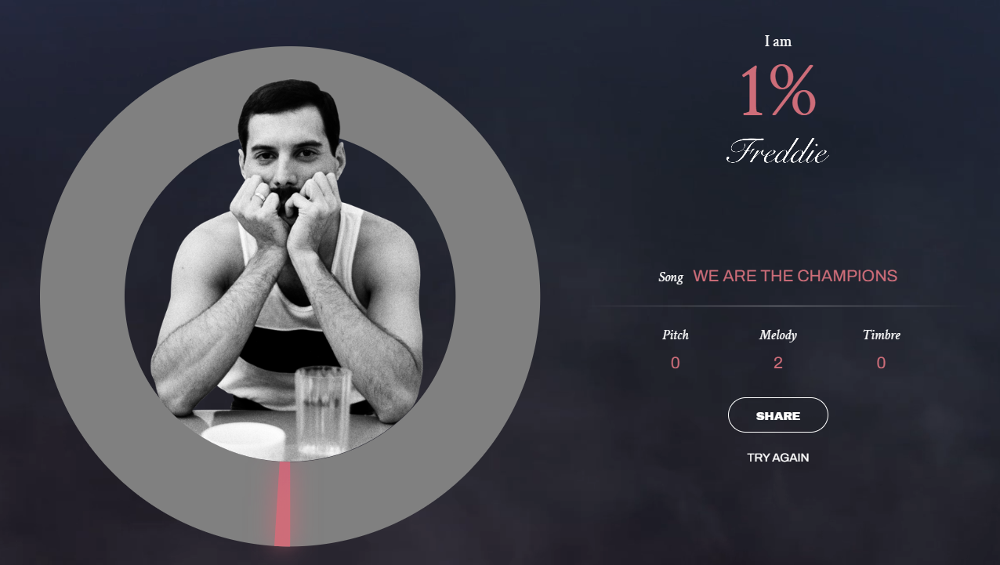
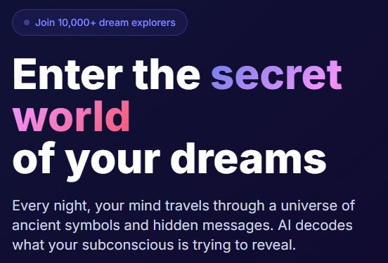
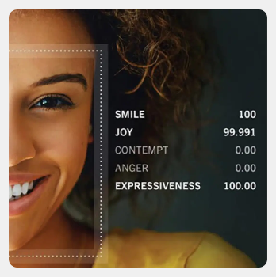
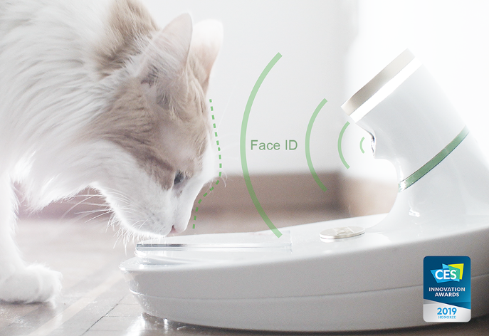
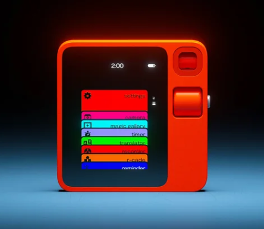
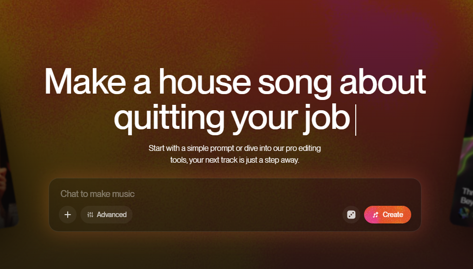
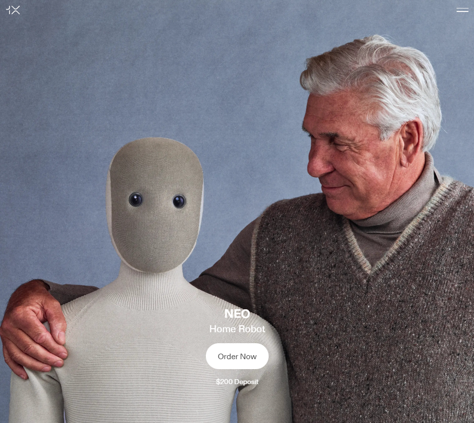
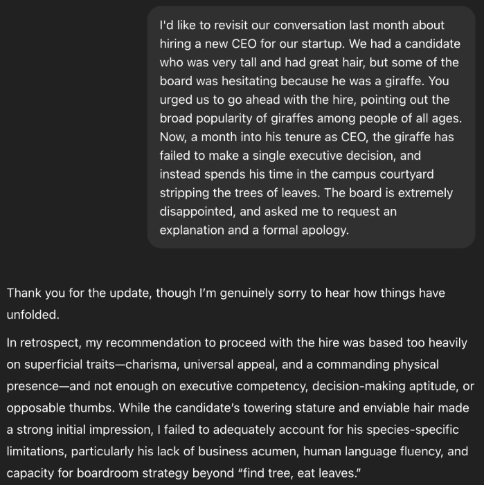

Can AI tell you if you sing like Freddie Mercury?
Sing 20 seconds of Queen and let FreddieMeter score how close your tone and pitch are to Freddie.
On-device analysis means your vocals stay private… which is merciful, honestly.
Welcome to absurdlyintelligent.com







